A screen-by-screen review of the Patina iOS app — walked on a physical iPhone 17 Pro Max, traced through 45+ SwiftUI screens — with a prioritized plan to make it intuitive, simple, and worthy of the brand.
Patina iOS has a design soul most apps never find — Playfair and clay, whisper bars, haptic milestones, a layered strata icon. The token system rivals the web portal's. But on a real device the experience contradicts the craft: the home screen's primary call-to-action does not respond to taps, decision options render with no content above an "Approve" button, several core screens are navigation dead ends, four Settings rows do nothing, and dark mode — fully designed in PatinaColors — is simply never used. The gap is not design vision. It is adoption, wiring, and finish.
Every reachable surface on a physical iPhone — consumer and designer modes — driven by touch, verified by screenshot.
Each screen's element tree inspected for traits, labels, tap-target geometry, and what VoiceOver actually hears.
All 45+ screens, the design tokens, components, and flows in apps/mobile/Patina traced against what shipped.
26 recommendations, each tied to evidence and a file path, sequenced into three phases a small team can ship.
The account we walked is dual-role. The consumer journey (scan → style → recommend → save) and the designer journey (projects → decisions → messages → receiving) share one navigation spine and one companion. Below, the actual screens as captured — annotated where the seams show.
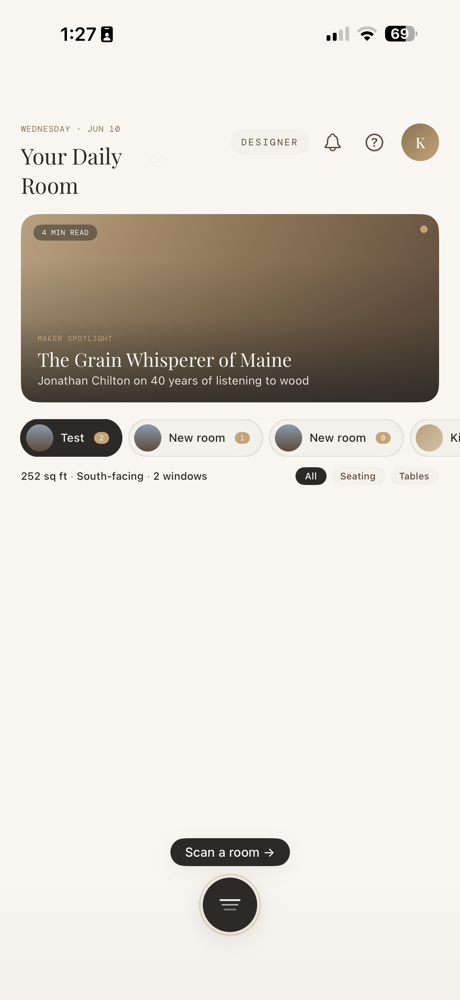
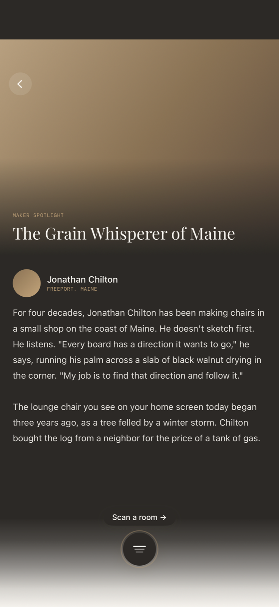
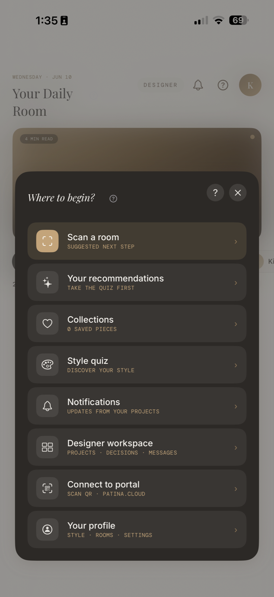
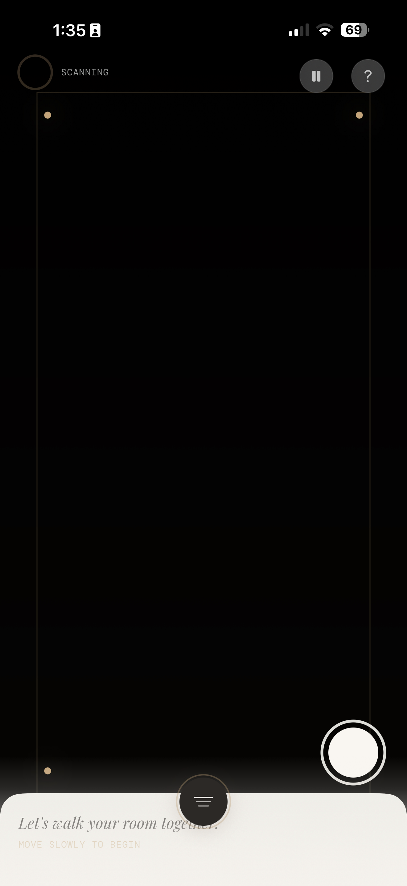
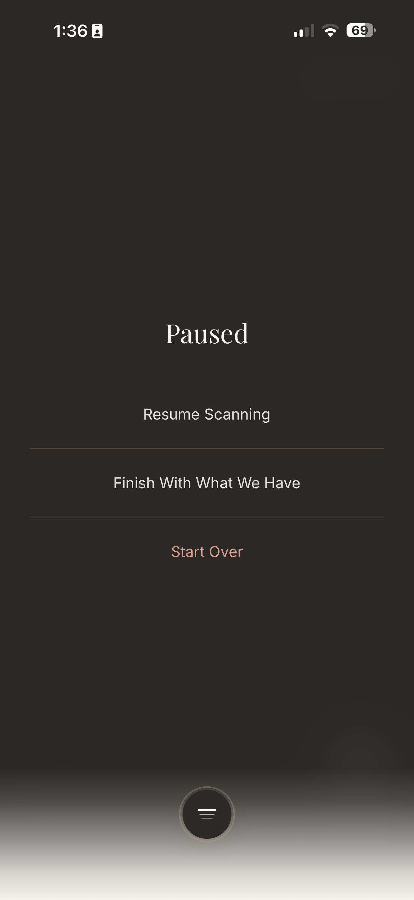
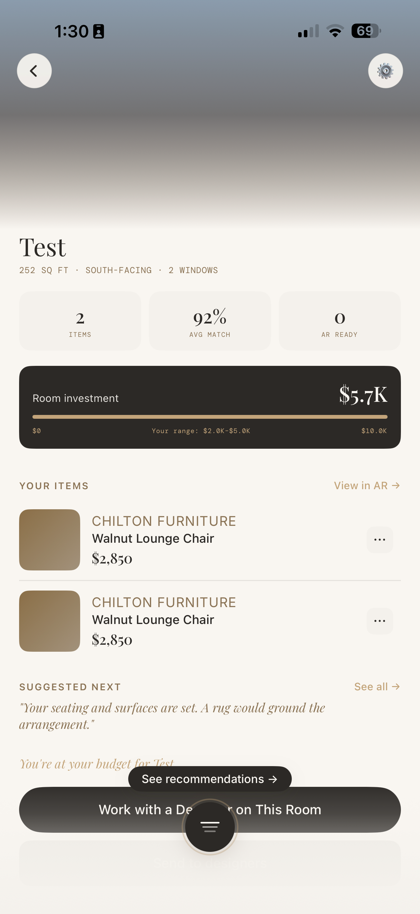
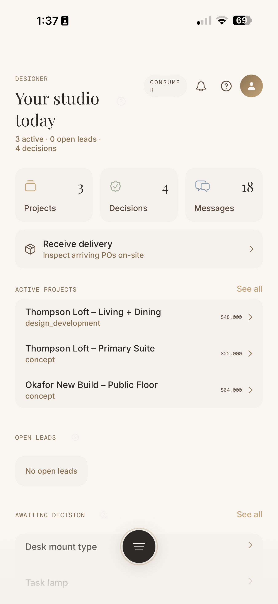
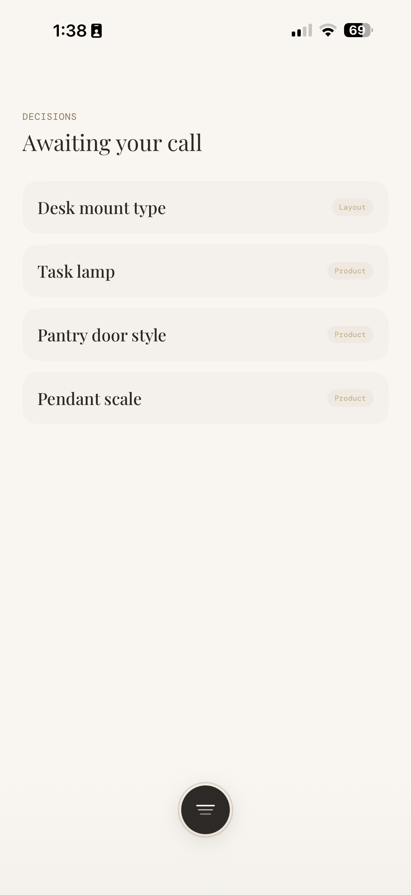
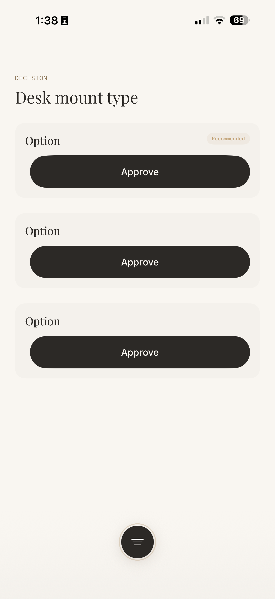
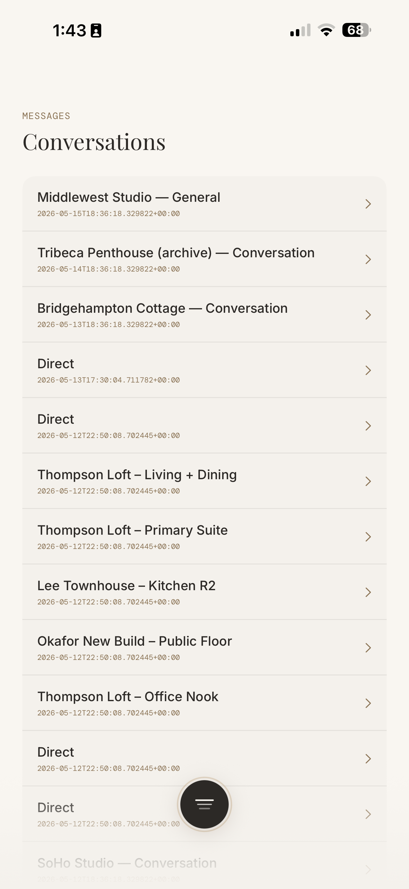
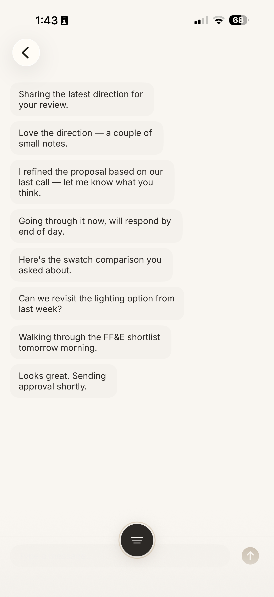
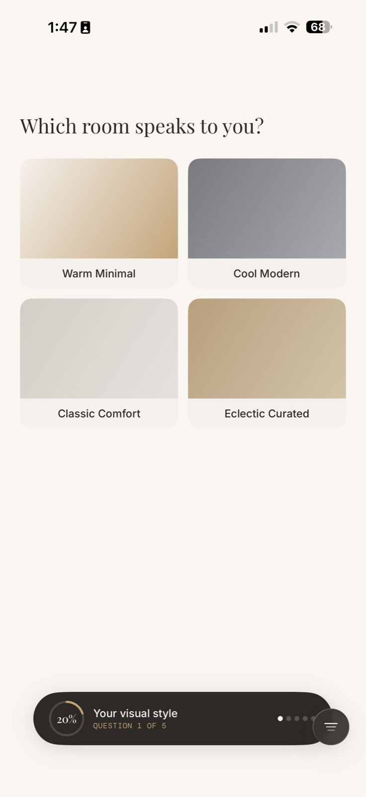
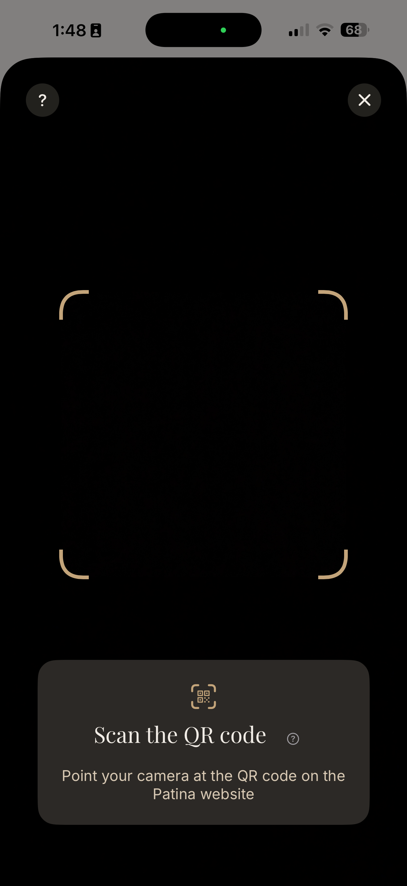
Each finding below was either reproduced on the device or verified in source. P0 = broken or trust-damaging, fix first. P1 = friction that erodes the experience. P2 = polish that compounds. Effort is sized S / M / L.
The single most damaging pattern found: primary actions rendered as 15-pt static text, hit areas swallowed by neighbors or by the companion's gesture layer, and rows with chevrons that go nowhere. Users will not file bugs — they will conclude the app is broken and leave.
The app's most important button is an 88×15 pt StaticText with no button trait. Repeated taps at its center do nothing; the companion's pull-gesture overlay appears to swallow touches near the bottom edge. The flow only opens via the companion menu.
Button wrapped in PatinaButton (44 pt min target), and exclude the companion's gesture region from content hit-testing. Add a UI test that taps it.On room detail the link sits 1 px above the full-width "Work with a Designer" button; every tap — even dead center — triggers the button instead. Recommendations, a core consumer promise, cannot be opened from a room.
PatinaButton in the action bar with its own 44 pt row; never stack a text link flush against a full-width button.Account, Style Preferences, Connected Portals, and Appearance all render with chevrons; none navigate. Account is the path to sign-out and profile management — likely a NavigationLink inside a sheet that has no NavigationStack, so it silently no-ops.
NavigationStack; remove or build the placeholder rows. A chevron is a contract — never ship one that does nothing. Features/Settings/Views/SettingsView.swiftFrom the consumer home, tapping the companion's "Designer workspace — Projects · Decisions · Messages" row closes the menu and stays put. The header's switch-mode chip works; the companion intent doesn't.
AppCoordinator.handleIntent path the role chip uses, and add intent-coverage tests for every companion action.Item rows in a room ("Walnut Lounge Chair, $1,850") respond only via their overflow "More actions" button — tapping the row itself does nothing, so there is no path from an owned item to its product page.
ProductDetailView; keep the overflow for move/copy/remove.Tapping a room chip on home produces no visible change (it filters an empty rail). Selection state, if any, is imperceptible.
Decision detail, project detail, and the conversations list shipped with no back affordance and edge-swipe disabled; the style quiz cannot be exited at all. The companion becomes an accidental escape hatch — clever, but no substitute for navigation.
Decision detail and project detail render zero navigation controls — no back chevron, no toolbar, and interactive edge-swipe is disabled by the hidden navigation bar. The accessibility tree confirms: the only buttons on decision detail are three "Approve"s.
interactivePopGesture when hiding the bar.Once opened, the quiz offers four answers and a progress bar — no close, no back, no skip. The only exits are answering all five questions or force-quitting the app.
After leaving room detail, its "See recommendations →" pill persisted on top of the Profile screen — a floating fragment of a previous screen's UI (state leak in the overlay layer).
.onDisappear teardown) rather than the global overlay host; add a regression test.With no tab bar, every cross-section jump routes through the companion. It's a distinctive idea, but today it's also masking missing navigation: users must discover that the floating dot is the menu.
Decisions are Patina's highest-stakes interaction — money and taste change hands. On device, option cards rendered as the word "Option" above an Approve button: no title, no image, no price, no comparison. Whether data or rendering, the safeguard is the same: never let an approve button appear without content.
Option title falls back to the literal string "Option"; description, image, and price are absent. A client cannot tell what they're approving — and an approval here is contractual.
client_decisions options. Features/Decisions/Views/DecisionDetailView.swiftThe inbox lists "Task lamp / Pendant scale" with no project name; detail offers approve-or-nothing. Web supports comments and clarification; iOS should not force a binary.
The walk itself — whisper bar, haptic milestones, motion-triggered threshold — is the app's best work. The edges betray it: an empty "finish" silently created a room named Kitchen, the pause menu has no exit, and the review screen never appeared.
"Finish With What We Have" on a zero-data scan returned straight to home with no review, no message — and a new "Kitchen" room appeared in the chip rail. The user is never told anything happened.
Paused offers Resume / Finish / Start Over. There is no "Exit without saving" — Start Over restarts the capture; leaving entirely means finishing or killing the app.
The threshold auto-starts on motion — poetic, but a first-timer holding still sees a black screen with no instruction to move.
Features/RoomScan/Views/ScanThresholdView.swiftFrom the code audit: scan upload errors log to PostHog and the UI proceeds regardless. Offline queueing exists (good); user-facing truth does not.
RoomScanSyncService.Blank brown squares where product photos should be, gradient rectangles labeled "Which room speaks to you?", rooms rendered as anonymous swatches, raw enum strings on project cards. The brand sells material truth; the screens must too.
Room items show flat brown squares; profile room cards show bare gradients; decision images fall to nothing. AsyncImage failure cases are unstyled across the app.
PatinaAsyncImage with a branded failure state (strata mark on linen texture + retry on tap). Replace all raw AsyncImage uses.Project cards and detail print design_development verbatim. The portal formats these; iOS must too.
PhaseDisplayName formatter mirroring the portal's vocabulary ("Design Development"), used everywhere a phase or status renders."Which room speaks to you?" presents four flat gradient swatches. The question is unanswerable as posed — and this is the moment that seeds the style profile.
"No phases yet / No payment milestones yet / No FF&E items yet" — three grey shrugs and nothing else, for a project the list says is worth $48,000 in design development.
Below the room chips: a filter row over an empty rail, then 350 points of nothing. The screen reads as unfinished on first launch.
"Handcrafted by artisans in the Patina network" stands in for every missing product story; the share tooltip describes behavior that doesn't exist (share is a no-op in ProductDetailView).
ShareLink to the portal URL; vary fallback copy by maker/category or hide the section.Threads titled "Direct" with ISO timestamps; messages as undifferentiated stacked sentences — no bubbles, no senders, no time, no read state. For an app whose business is designer-client trust, the conversation surface is the relationship.
No sender attribution, no left/right alignment, no timestamps, no grouping. Two parties' words are visually identical.
Features/Messaging/Views/ThreadDetailView.swiftMultiple rows titled "Direct"; no participant name, no last-message preview, no unread weight. VoiceOver reads raw ISO-8601 strings.
Reading the live accessibility tree exposed what screenshots can't: overlays that leave the whole background screen tappable to VoiceOver, switches with no labels, the companion bubble absent from the tree entirely, and a typography system whose hardcoded sizes ignore Dynamic Type.
With the story detail open, every home control — chips, bell, profile — remained in the AX tree as visible and enabled. VoiceOver users will tab through a ghost screen behind the content.
.accessibilityHidden(true) on background content while any overlay/expanded card is presented; audit story, product, and companion overlays.The floating bubble — the app's primary navigator — has no button trait and no label (an "Other" node, sometimes absent entirely). VoiceOver users cannot find the menu.
.accessibilityElement() with label "Patina companion — menu", trait .button; verify the pull gesture has an AX action equivalent.The Notifications/Haptics toggles expose no AXLabel — VoiceOver announces "switch, on" with no subject.
Toggle; add a lint/test pass asserting no interactive element ships label-less.Tokens use fixed sizes (7–56 pt, some off-scale like 11/13/21 pt) plus raw .system(size:) calls; accessibility text sizes change nothing. Inter-Light is referenced but not embedded — it silently falls back.
PatinaTypography through @ScaledMetric/relativeTo everywhere, kill raw .system(size:) in features, embed or remove Inter-Light. Test at AX1–AX5.The token files are genuinely good — semantic colors with a warm dark palette, a full spacing/radius scale, five button styles. Features then hand-roll their own: 14 pt corners that exist in no scale, 9/10/20/28 pt padding, system fonts beside brand fonts, a dark-themed services sheet inside a light app.
Off-grid spacing and radii across Home, Settings, product cards; DailyProductCard, ProductCard, RoomChipRail, SettingsView are the worst offenders.
PatinaSpacing/PatinaRadius (extend the scale where 14/20 pt is genuinely wanted). Add a danger-style grep check to CI."Get Design Help" renders charcoal-on-dark inside an otherwise light app — the only dark surface, and not by design system intent.
Background.primary/PatinaCard; reserve dark surfaces for camera/AR contexts where they earn their keep.PatinaButton (capsule, 52 pt) coexists with AuthButton (12 pt corners, 50 pt), bespoke BackChevronButtons, and inline-styled buttons.
PatinaButton styles; deprecate the rest.No .searchable on lists, no .swipeActions (delete/archive), no .contextMenu on cards, pull-to-refresh inconsistent, no Reduce Motion checks.
accessibilityReduceMotion gates on the big animations.We flipped the device to Dark Appearance and re-shot the same screens: nothing changed. The app doesn't force light mode — PatinaColors.DarkPalette and the patinaDynamic() bridge are built and waiting — but features hardcode offWhite, softCream, and charcoal directly (~14 dynamic usages in the entire app). Tonight, every user who reads in dark mode gets a flashlight.
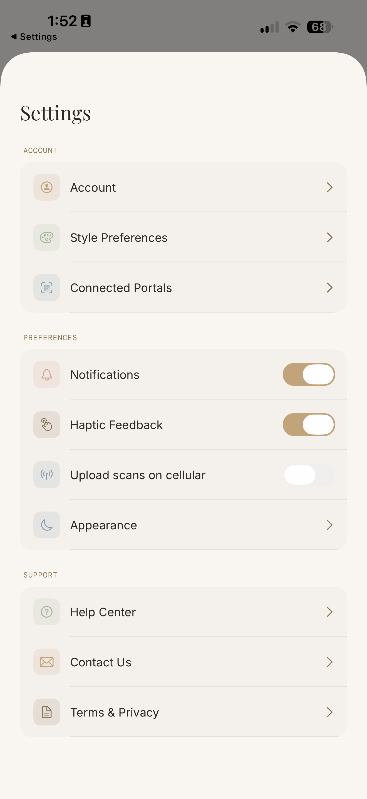
Replace direct palette references with semantic roles — Background.primary, Text.primary, Interactive.* — which already resolve through patinaDynamic() to the warm-graphite dark set.
UIUserInterfaceStyle = Light in Info.plist so mixed system components (alerts, share sheets) don't render half-dark against light screens.| # | Recommendation | Where | Pri | Effort |
|---|---|---|---|---|
| R01 | Make "Scan a room" a real, tappable button | DailyRoomView | P0 | S |
| R02 | Unbury "See recommendations" from the action bar | RoomProjectView | P0 | S |
| R03 | Fix dead Settings rows (Account/sign-out path) | SettingsView | P0 | M |
| R04 | Back affordance on every pushed screen; restore edge-swipe | Decision/Project/Threads | P0 | M |
| R05 | Exit affordance on the style quiz | StyleQuizView | P0 | S |
| R06 | Decision options: minimum render contract; gate Approve | DecisionDetailView | P0 | M |
| R07 | Hide background from VoiceOver under overlays | Story/product/companion overlays | P0 | M |
| R08 | Dark mode adoption (semantic colors); force Light until done | App-wide | P0 | L |
| R09 | Wire companion "Designer workspace" intent | CompanionOverlay → AppCoordinator | P1 | S |
| R10 | Tappable room item rows → product detail | RoomProjectView | P1 | S |
| R11 | Fix orphaned overlay pill state leak | Overlay host | P1 | S |
| R12 | Block/explain empty-scan finish; no silent room creation | ScanViewModel / pause menu | P1 | S |
| R13 | "Leave scan" option in pause menu | ScanWalkView | P1 | S |
| R14 | Surface upload/sync status on room cards | RoomScanSyncService → cards | P1 | M |
| R15 | Branded image-failure state (PatinaAsyncImage) | App-wide | P1 | S |
| R16 | Human-readable phase/status formatter | Projects, designer home | P1 | S |
| R17 | Real room imagery in style quiz | StyleQuizView assets | P1 | M |
| R18 | Chat anatomy for threads (bubbles, senders, time) | ThreadDetailView | P1 | M |
| R19 | Thread list identity: names, previews, unread weight | ThreadListView | P1 | S |
| R20 | Decision rows: project context + "Discuss this" | DecisionList/Detail | P1 | S |
| R21 | Companion AX identity + labels on all switches | CompanionOverlay, SettingsView | P1 | S |
| R22 | Dynamic Type via scaled tokens; embed/remove Inter-Light | PatinaTypography + features | P1 | L |
| R23 | Project detail: lead with substance, collapse empties | ProjectDetailView | P1 | M |
| R24 | Token adoption sweep (spacing/radius/fonts) + CI guard | Home, Settings, cards | P1 | M |
| R25 | Implement product share (ShareLink); fix fallback copy | ProductDetailView | P2 | S |
| R26 | Native patterns: search, swipe actions, context menus, Reduce Motion | Lists app-wide | P2 | M |
Sequenced so each phase ships a coherent, testable promise. Phase 1 is almost entirely small/medium tickets — a focused two-week push by one or two engineers, because nothing else matters while primary buttons don't work.
The walk experience (whisper bar, haptic milestones at 25/50/75%, idle + tracking-loss recovery, abandoned-scan resume), the empty states ("You're all caught up", "Nothing waiting on you"), the single-sheet-driver architecture in AppCoordinator, 281 accessibility labels, the layered dynamic app icon, and a token system (PatinaColors / Typography / Spacing / Shadows / Gradients) that most teams would envy. The bones are right.
45+ screens: Auth (AuthScreenView, AuthenticationView, QR approval), Onboarding (carousel, camera primer, quiz/result), Consumer (DailyRoom + detail overlays, YourSpaces, RoomProject, RoomSettings, CrossRoom, ManualRoomEntry, Collections, Recommendations, ProductDetail, ARPlacement, Profile), Scan (threshold, walk, review + 3 sheets, saved, soft landing, style conversation, floor plan), Designer (DesignerHome, ProjectList/Detail, DecisionList/Detail, ReceiveDelivery, Consultation), Messaging (ThreadList/Detail), Notifications, Settings/Account, and the Companion overlay.
Auth & onboarding — capturing would have required signing out the only session on the device with the Account screen unreachable (R03); reviewed from source. Scan review & AR placement — require a physical LiDAR walk of a real room; the phone was stationary during review. Recommendations grid — unreachable via touch (R02); the Aesthete engine behind it is also still a placeholder (AestheteEngineService.swift). These should be re-shot in the Phase-1 verification pass.
Reviewing on the live account created one junk room ("Kitchen", via the silent empty-scan finish — itself finding R12) alongside the pre-existing "New room" test entries. Recommend cleaning these up when verifying R12.
24 captures in screenshots/, numbered 01–24 and referenced throughout. Accessibility-tree excerpts quoted in findings were read live from the running app via the device's AX API.
All 26 recommendations were implemented the same day in four waves on main: Wave 0 949d48da (PatinaAsyncImage, PhaseDisplay, dynamic tokens, interim light guard) · Wave 1 4c12efc8 (R01–R07, R09, R11, R20–R21: every P0 — tappable pills, navigation chrome + edge swipe, quiz exit, Settings/Account fix, decision render contract) · Wave 2 15e69a71 (R10, R12–R19, R23, R25: scan gating, messaging anatomy, item rows, share, phase vocabulary, project detail, quiz copy) · Wave 3 e8a77e92 + 1d854e69 (R08, R22, R24, R26: ~620 colors to semantic dark-mode roles + Appearance picker, ~130 fonts tokenized for Dynamic Type, spacing/radius sweep, search/swipe/context-menu/refresh patterns, ~35 Reduce Motion gates, ratcheting token-check script). Two review attributions were corrected during implementation: the "dark services sheet" was the app's lone correctly-dynamic surface (the rest were hardcoded light), and the "Kitchen" room predated the scan — empty scans never created rooms, they abandoned silently, which the new gate + Leave Scan flow now make explicit.